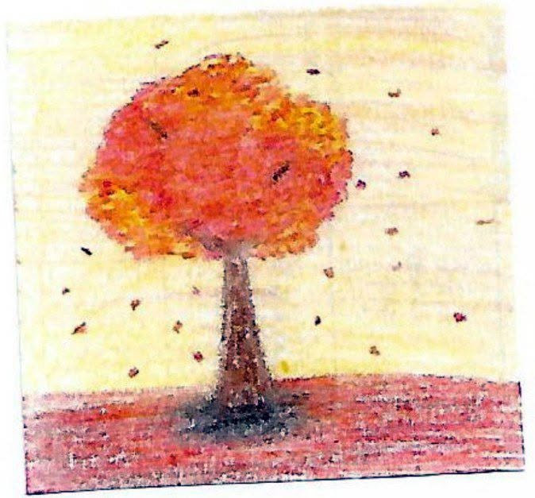

Soir d’automne
Le vent joue dans les branches nues,
Les feuilles mortes dansent,
émues,
une à une,
se détachent,
glissent,
s’attardent dans l’air avant de céder.
L’ombre s’étire sur les pavés,
Tandis que l’éclat d’or se ternit,
le jour s’efface comme une parole trop douce.
Un soupir court dans les ruelles,
Comme un adieu discret,
D’un jour qui tombe,
dernière caresse d’un soleil las,
Sur la terre encore humide de son pas.
Soir d’automne,
saison d’attente,
Tu nous habilles d’une teinte lente.
Et sous tes cieux voilés d’encens,
On pleure l’été qui s’éloigne,
et le cœur se tait.
Djamel Metref
At Yenni le 27 septembre 2025

← Tous les poèmes